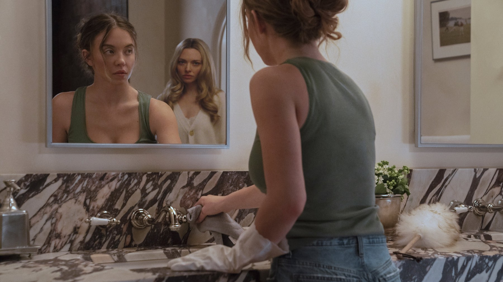
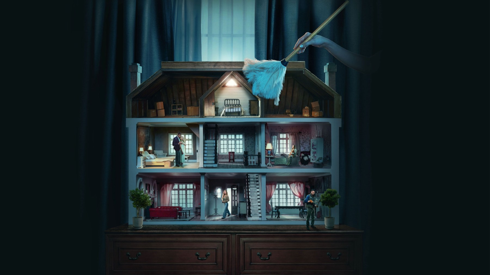

The Housemaid (Una di famiglia): la recensione
Trentacinque milioni di budget, oltre quattrocento di incasso: il thriller domestico con Sydney Sweeney e Amanda Seyfried che ha riportato in sala un genere dato per spacciato
Trentacinque milioni di dollari di budget, circa 400,5 milioni di incasso mondiale. Con questi numeri, un thriller domestico tratto da un bestseller diventa un caso, e The Housemaid lo è diventato davvero. In Italia è uscito il 1 gennaio 2026 come Una di famiglia - The Housemaid ed è arrivato nelle sale con un incasso di 3,6 milioni di euro.
La domanda è se dietro i numeri ci sia un buon film. La nostra risposta è: un film di genere solido, che vive soprattutto di due attrici e che sa benissimo quello che sta facendo, anche quando esagera.
Di che cosa parla
Millie Calloway è una giovane donna con un passato difficile e una libertà vigilata da rispettare. Trova lavoro come domestica a tempo pieno in una ricca famiglia di Long Island, i Winchester. La casa è bellissima, la padrona è gentile e il marito è affascinante. Poi le piccole cose cominciano a non tornare. Non diremo di più: in un film così la sorpresa è metà del biglietto.
Alla regia c'è Paul Feig, noto soprattutto per le commedie, che qui cambia registro senza perdere il gusto per il ritmo. La sceneggiatura di Rebecca Sonnenshine adatta il romanzo del 2022 di Freida McFadden. Le riprese sono iniziate il 3 gennaio 2025 nel New Jersey e sono proseguite fino a marzo.
Va detto anche da dove nasce il film. Il romanzo di McFadden, uscito nel 2022, è il tipo di libro che passa di mano in mano e che ha costruito un pubblico prima ancora di arrivare al cinema. Portarlo sullo schermo significava soddisfare chi conosce la storia e, insieme, convincere chi non l'ha mai aperta. Lionsgate ha scelto un budget contenuto e un cast riconoscibile, e i numeri dicono che la scommessa è stata vinta: 126,4 milioni di dollari negli Stati Uniti e 274,1 milioni sul resto del mercato.

Il cast: Seyfried ruba la scena
Sydney Sweeney è Millie, Amanda Seyfried è Nina Winchester, Brandon Sklenar è il marito Andrew e Michele Morrone è Enzo. Il film regge sul duello tra le prime due, e per noi lo vince Seyfried: ha il ruolo più instabile e lo gioca con una precisione che tiene sveglio lo spettatore anche quando la sceneggiatura rallenta.
Sweeney ha il compito più ingrato, perché deve restare credibile mentre intorno tutto è sopra le righe. Lo fa con misura. In italiano le voci sono di Letizia Ciampa per Millie e di Domitilla D'Amico per Nina.
Intorno a loro, Sklenar ha il ruolo del marito affascinante e Morrone quello di Enzo, il giardiniere: presenze che servono al racconto più che al duello centrale, ma che completano bene il quadro di una famiglia in cui ognuno sembra avere qualcosa da nascondere. Il merito della regia è non lasciare mai che i comprimari rubino spazio alle due protagoniste, e di usarli come specchi del loro rapporto.

Dove funziona e dove no
La nostra posizione è questa: The Housemaid funziona come un thriller che conosce le sue regole. L'idea della casa perfetta che nasconde qualcosa è antica quanto il genere, ma Feig la mette in scena con una grammatica precisa: ambienti lucidi, battute che sembrano innocue, due protagoniste che cambiano peso nella scena da un minuto all'altro.
Il limite è la prevedibilità. Chi ha visto qualche thriller degli anni Novanta intuisce presto dove va il racconto, e il film non cerca davvero di nasconderlo: preferisce portarvi per mano lungo la strada, con qualche scossa ben piazzata. Anche il tono oscilla tra serietà e compiacimento, e non sempre si capisce dove finisca l'uno e cominci l'altro.
Un'ultima nota sulla confezione. La durata di 131 minuti è generosa per un thriller di questo tipo, e in effetti il secondo atto si prende il suo tempo. Chi apprezza la costruzione lenta della tensione lo vivrà come un pregio, chi cerca scosse continue qualche volta guarderà l'orologio. Per noi il ritmo regge, perché ogni scena aggiunge un dettaglio, un sospetto o un cambio di alleanza.
Come è stato accolto
Secondo i dati riportati da Wikipedia a ottobre 2026, Rotten Tomatoes dà il 74% di giudizi positivi su 202 recensioni, Metacritic 65 su 100 e il pubblico americano ha assegnato un B al CinemaScore. Numeri buoni, non entusiasti, che raccontano un film più apprezzato dagli spettatori che dai critici.
In Italia la lettura è stata divisa. Una parte della critica lo ha definito un omaggio kitsch ai thriller anni Novanta, un'altra ne ha sottolineato la vocazione popolare. Noi stiamo a metà: il gusto per l'eccesso è consapevole, e proprio per questo il film non sembra mai fuori fuoco.
Dove vederlo e cosa viene dopo
Dopo l'uscita in sala del 1 gennaio 2026, il film è arrivato in home video il 16 aprile 2026. A ottobre 2026 lo trovate in streaming su Amazon Prime Video, Sky Go e Now TV. La disponibilità può cambiare, quindi controllate prima di accendere la tv.
Chi ha amato il film avrà modo di tornare dai Winchester: un seguito tratto da The Housemaid's Secret è previsto per il 17 dicembre 2027, con Feig, Sweeney e Morrone di nuovo a bordo e Kirsten Dunst tra le new entry.
A chi lo consigliamo
A chi ama i thriller domestici e le serate di tensione senza troppe pretese. A chi ha letto il romanzo e vuole vedere come è stato adattato. A chi cerca due attrici in forma dentro un racconto che non vuole cambiare il genere ma farlo bene. Chi cerca invece una storia davvero imprevedibile rischia di uscirne con l'impressione di aver già visto tutto.
The Housemaid è un thriller domestico ben recitato e ben ritmato, con Amanda Seyfried che regge il film sulle spalle. La trama si indovina presto, ma il piacere sta nel modo in cui Feig la mette in scena. Un piacere colpevole che vale la serata.
Domande frequenti
Quando è uscito The Housemaid in Italia?
Il 1 gennaio 2026 al cinema, con il titolo Una di famiglia - The Housemaid.
Il film è tratto da un libro?
Sì, dal romanzo del 2022 di Freida McFadden. La sceneggiatura è di Rebecca Sonnenshine.
Dove si vede The Housemaid in Italia?
In streaming su Amazon Prime Video, Sky Go e Now TV.
Ci sarà un seguito?
Sì, tratto dal romanzo The Housemaid's Secret, con uscita prevista il 17 dicembre 2027 e Kirsten Dunst nel cast.